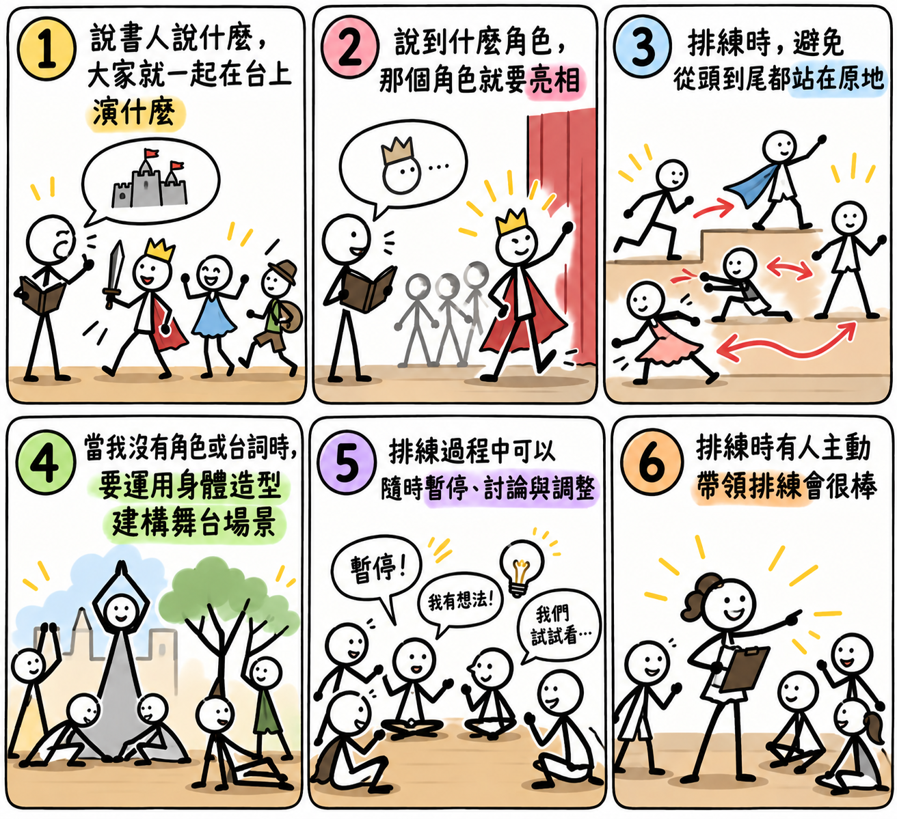

第一堂課 · 說故事劇場
1.抓取場景任務
請各組從劇本中選出三個關鍵場景，運用身體與角色創造舞台畫面。

🎯 本堂任務與圖說
🎭 五齣劇本場景參考
⏱ 各組排練倒數｜每組 7 分鐘
選擇組別後按開始。倒數結束會提示，並自動切換下一組；也可以手動切換或暫停。
07:00
💬 排練後討論與回饋
🏆 小組評分與班級紀錄
四個項目各 1–5 分，滿分 20 分。請先選班級、組別與課程，再儲存評分。
本次總分：20／20
| 班級 | 課程 | 組別 | 總分 | 評語 | 儲存時間 | 操作 |
|---|
紀錄會儲存在目前瀏覽器的本機儲存空間，不會自動同步到其他裝置或 Excel 雲端。建議課後下載 CSV 備份。